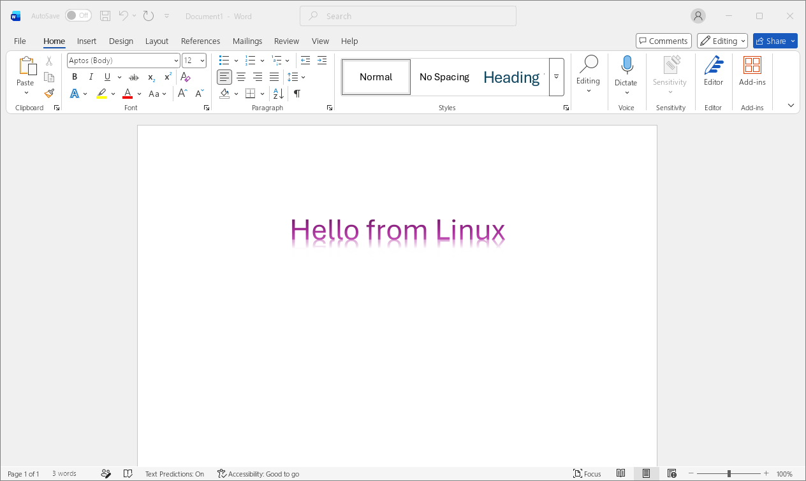

SUBJECT
Microsoft Office
for Linux
- Method
- Wine runner
- Interface
- Native manager
- Windows VM
- None
Pick one
No shared template. Each direction starts from its own idea, then earns the screenshot and call to action.
Begin review ↓A direct route from Linux to Word, Excel, PowerPoint and Outlook. No Windows VM along the way.
Board Wine4Office →
SUBJECT
“Keep the file format.CATALOGUED 2026
Change the operating system.”
Modern Office.
Native Linux desktop.
Zero virtual machines.
Wine4Office pairs a purpose-built Wine runner with a native manager, allowing modern Microsoft Office to thrive on Linux.
Obtain specimen →SUBJECT: OFFICE DEPENDENCY
Wine4Office runs modern Microsoft Office directly on Linux using a tuned Wine runner and isolated environment.
A specialized Wine runner. A native mission controller. Word, Excel, PowerPoint and Outlook operating without Windows.
Initiate download →NO VM! NO DUAL BOOT! JUST YOUR APPS ON YOUR DESKTOP!
Run modern Microsoft Office on Linux through a purpose-built Wine runner.
Install Wine4OfficeFour familiar applications. One carefully tuned runner. Press play without starting Windows.
Get the release ↗